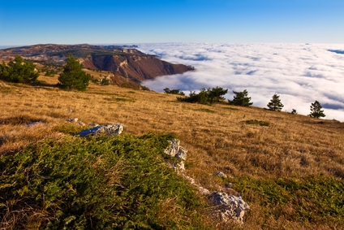
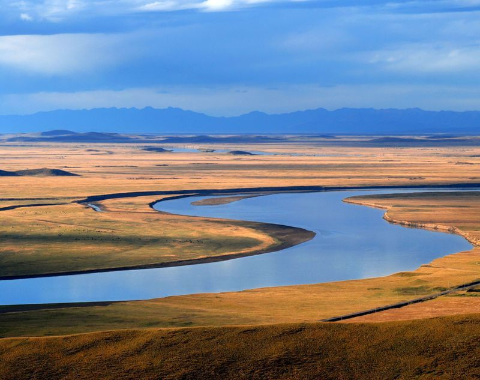
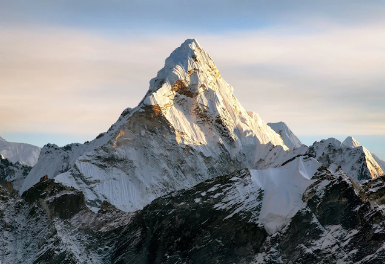

Plateaus
table land that is high with a flat top. It has steep slopes. Many rivers
flow through plateaus. Some plateaus are large like The Deccan Plateaus in
India and the highest one is in Tibet. Other examples are Colorado in
N. America and Bolivian plateau in S. America. The dry side of the plateaus
is sheltered from the winds and does not get rains, climate is cold.
LANDFORMS
Type of Landforms


Plains
low lying and flat lands are called plains, can be hilly sometimes. Rivers
deposit sand and silt to form plains. Some of them are in the interior of the
continent and some near the sea coast. They are thickly populated with large
cities and towns. Roads and railways are easier to build in plains. Fertile
soil is suitable for agriculture. Ancient civilization came up on the banks
of rivers, on the plains.

Mountains
The mighty chunks rise all over the world, including the oceans. They usually
have steep, sloping sides and sharp or rounded ridges, and a high point,
called a peak or summit. Most geologists classify a mountain as a landform
that rises at least 1,000 feet (300 meters) or more above its surrounding area.

Hills
piece of land that rises higher than everything surrounding it. It looks like a
little bump in the Earth. Since theyre higher than everything around them,
hills are good places to get a nice view.